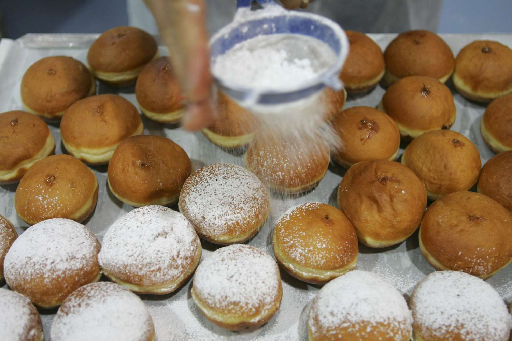

Schmalzkuchen (Little German Donuts)

Schmalzkuchen for a different donut experience!
Ingredients
- 250g All-Purpose Flour, plus extra for rolling out dough
- 125ml Milk, warmed
- 1 Tsp Dry Yeast, active
- 2 Tbsp Sugar
- 1 Large Egg
- 1 Tbsp Vanilla Sugar, or an additional tablespoon of Sugar
- 2 Tbsp Butter, unsalted
- 1 1/2 Tsp Lemon Zest
- 1/4 Tsp Salt
- 2 inches Oil, for deep-frying
- Confectioner's Sugar, for garnish
Method
- Place the flour in a bowl and make a well in the middle. Pour the warm milk into the well, sprinkle the yeast on top, and add a pinch of the sugar. Stir the milk a little, then cover with a clean kitchen towel, and let rest for 10 minutes.
- When the milk mixture begins to foam, add the egg, the remaining granulated sugar, the vanilla sugar, butter, lemon zest, and salt. Mix with a large spoon, or in an electric mixer with a dough hook, until the dough comes together to form a ball. Add a little more flour, if needed.
- Knead the dough until a soft, smooth ball can be formed. Grease or oil the ball, place in a small container and let rise, covered, for 20 minutes or so. (The dough will rise slightly.)
- Lightly flour a cutting board and pat the dough into a rectangle. Roll out into 1/2-inch (1-centimeter) thick. Using a pizza cutter or bench knife, cut the dough into rectangles (or diamonds), roughly 1 x 1 1/2 inches (2 x 3 centimeters).
- Heat 2 inches of oil in a stockpot or other large, deep saucepan. (If you are using a deep-fat fryer, follow manufacturer's instructions.) The oil should be heated to 365 F. Use a deep-fat fry thermometer to check.
- Fry the donuts in 4 to 5 batches for 1 1/2 minutes, or until the underside turns golden brown. Turn them (only once!) and fry for an additional 1 1/2 minutes until golden brown on the other side.
- Remove from the oil and drain on paper towels or a brown paper bag.
- Sift confectioners' sugar over the top and eat while still warm.
- Enjoy.